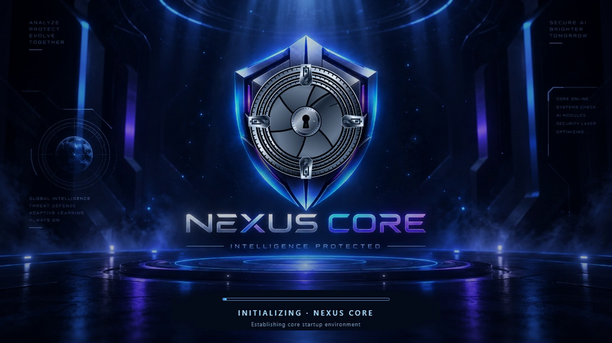
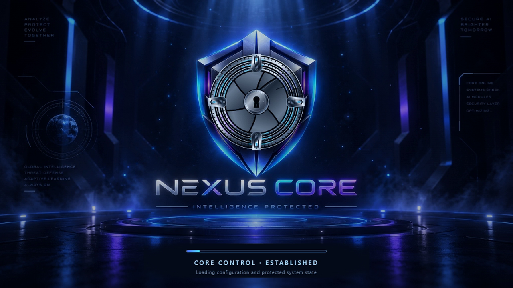
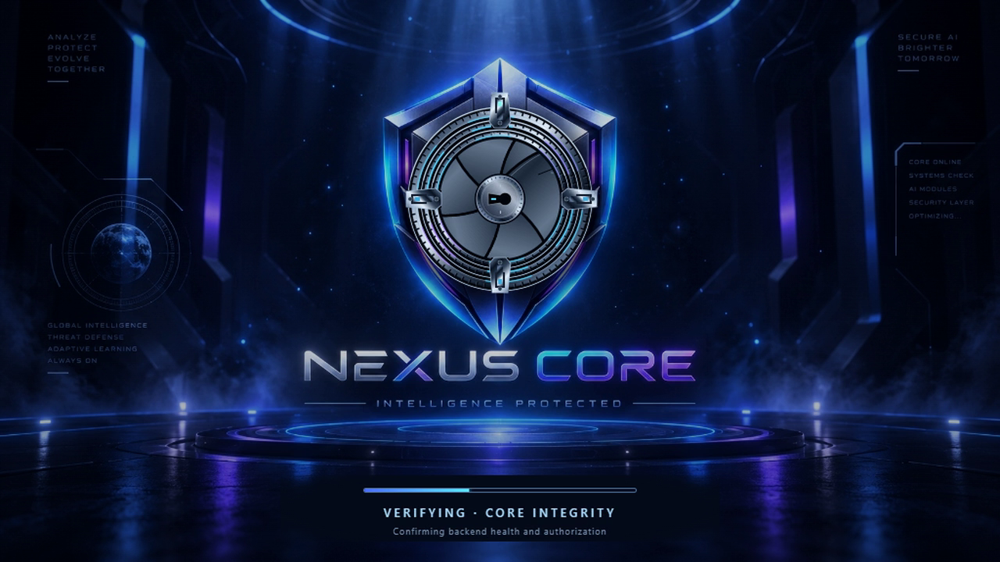
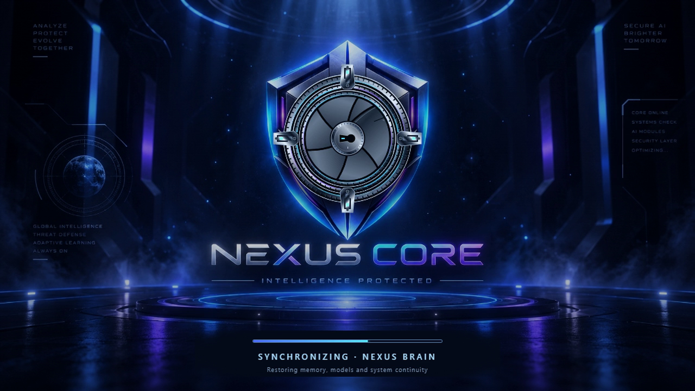
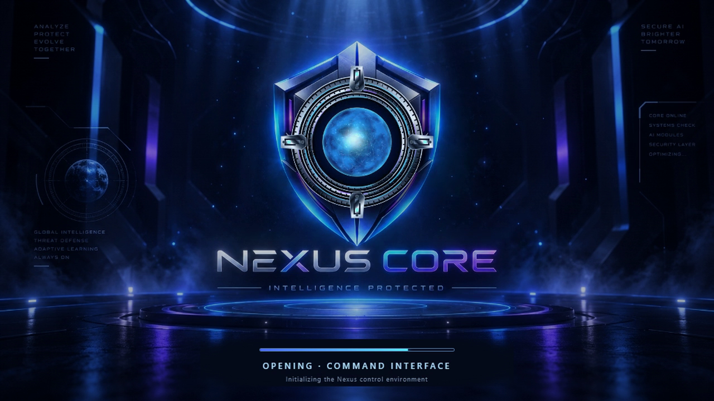
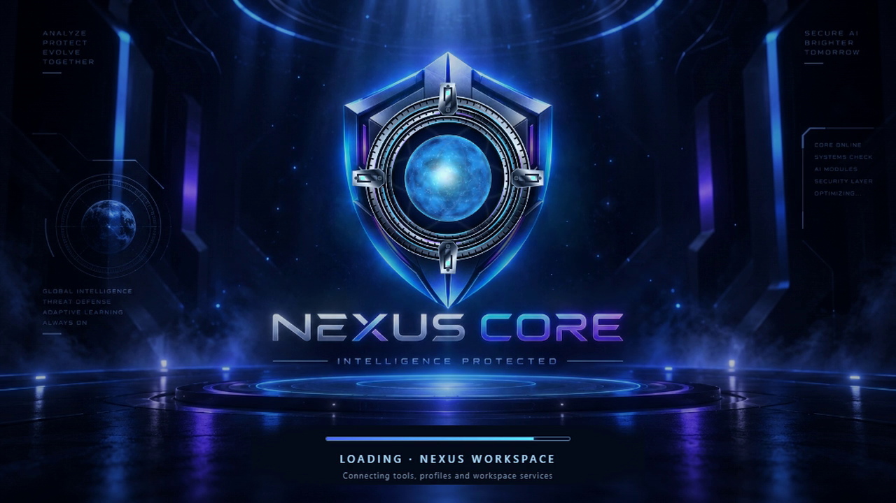
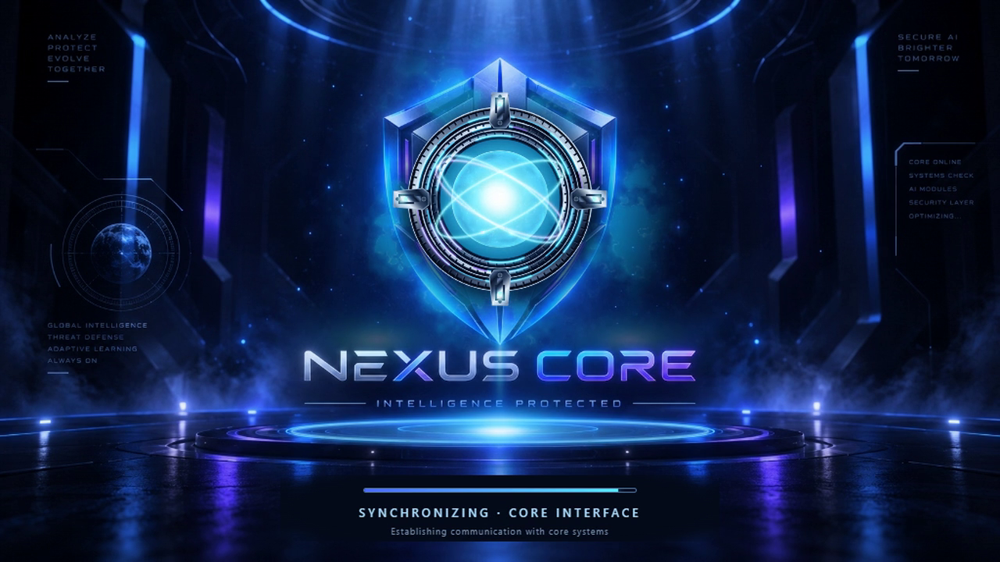
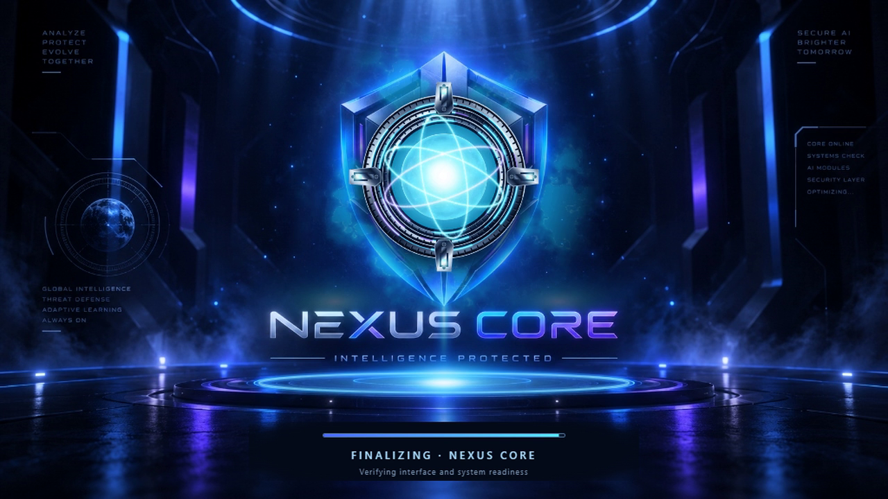
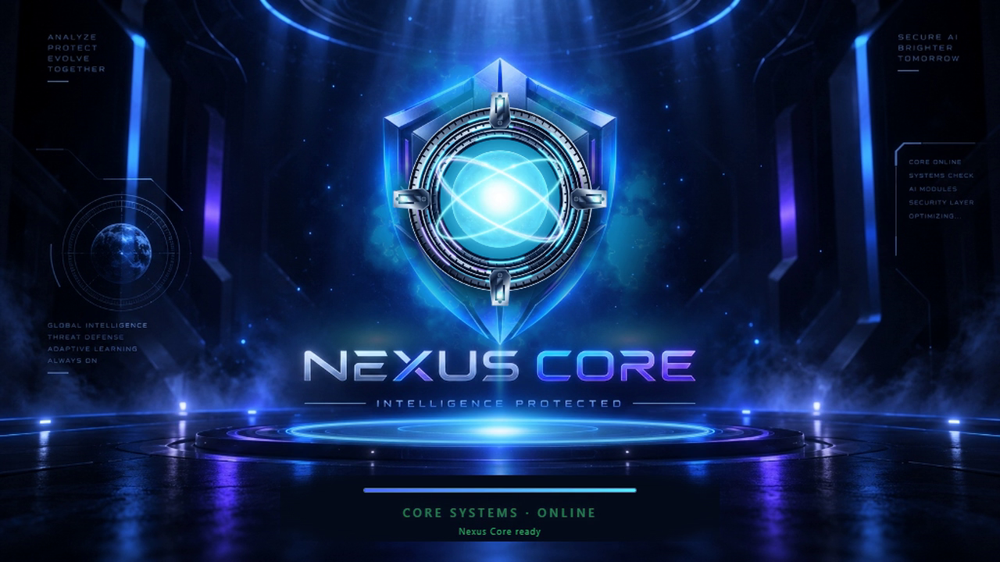
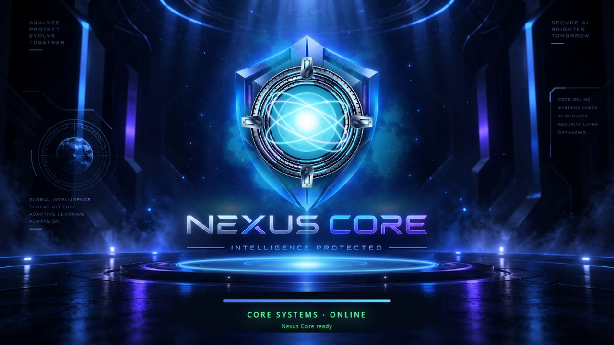

30 seconds · 1280 × 720 · 30 fps. Existing core motion, lighting and cinematic sound. The clean master leaves the loading readout for live application captions.
Hold before ONLINE at 11.6 s. Loop the completed state from 24.4 s to 30.0 s (end exclusive): four full 1.4-second pulses. These are presentation boundaries; the host owns actual readiness. Timing and integration handoff.









